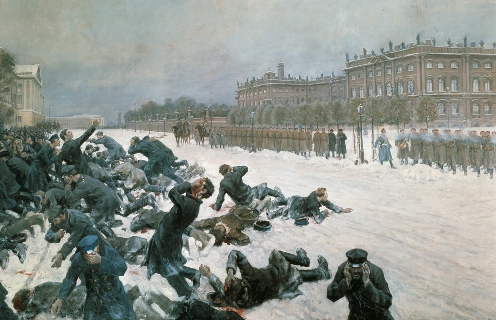
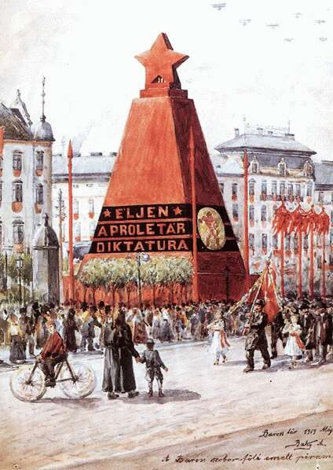
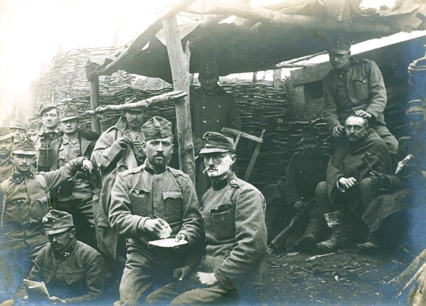
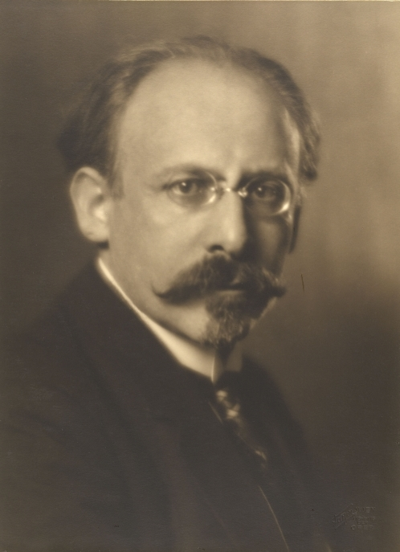
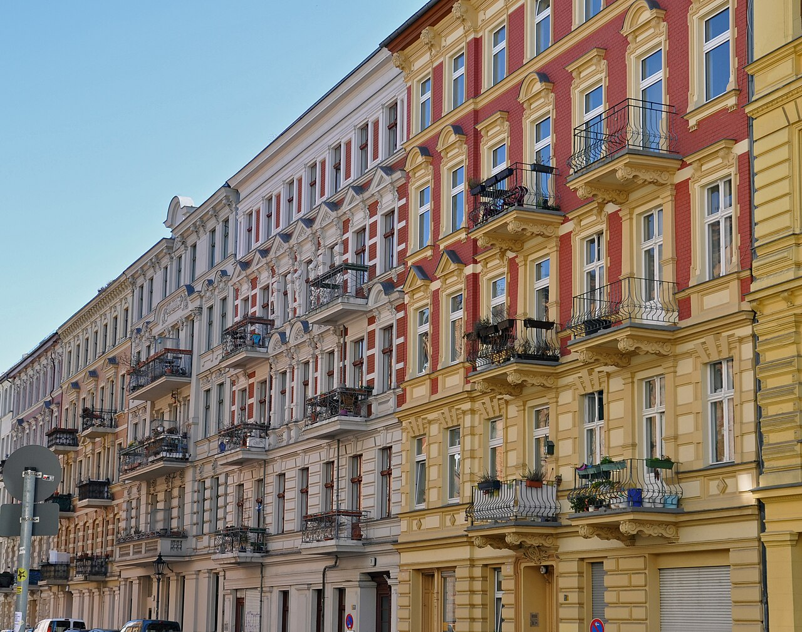
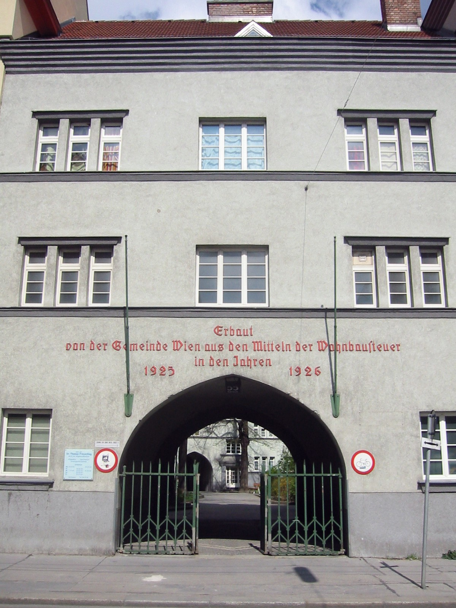

카페 첸트랄 (Cafe Central) 이야기 (4) - "빨갱이 비엔나"
게시: 2026-09-03T06:30:30+09:00
1914년부터 4년 넘게 이어진 WW1은 참전국 중에서도 특히 다민족 제국이었던 오스트리아-헝가리를 근본부터 파괴했습니다. 전쟁 막바지, 체코와 헝가리, 남슬라브 지역이 차례로 독립을 선언하며 떨어져 나갔고, 1918년 11월 카를 1세 황제를 끝으로 600년 넘게 이어져온 합스부르크 왕조는 허무하게 막을 내렸습니다. 한때 5천만 인구를 거느렸던 다민족 제국이 하루아침에 독일어를 쓰는 650만 인구의 작은 내륙국으로 쪼그라들었는데, 그 폐허 위에 세워진 것이 바로 독일계 오스트리아 공화국, 훗날의 오스트리아 제1공화국이었습니다. 전쟁은 많은 목숨을 앗아가고 재산을 파괴하며 이렇게 수백년의 역사를 가진 유서 깊은 왕조를 무너뜨립니다. 그러나 산불이 휩쓸어 잿더미가 된 숲에서도 새로운 생태계가 시작되고 더 건강한 숲이 부활하듯이, 전쟁의 폐허에서도 긍정적인 변화가 일어나는 경우가 많습니다. WW1 이후 황폐화된 오스트리아도 마찬가지였습니다. 재산 등급에 따라 투표권을 차등 적용했던 합스부르크 왕정과는 달리, 새로운 공화국에서는 보통, 평등, 비밀 선거권의 정신을 그대로 적용한 새로운 투표제가 도입되었습니다. 여태까지 뼈 빠지게 일하고 목숨 바쳐 싸우면서도 자신의 목소리를 내지 못하던 오스트리아의 노동계급은 드디어 자신의 투표권을 제대로 활용할 수 있게 되었습니다.

(이 그림은 1905년 러시아 혁명의 계기가 되었던, 1905년 1월 러시아 상트 페체르부르그에서 벌어진 '피의 일요일' 사건입니다. 본문에서는 WW1 이후에야 오스트리아에 보통 투표권이 도입되었다고 썼지만, 정확하게는 오스트리아 남성들에게 보통 투표권이 주어진 것은 1907년이었는데, 이것도 러일전쟁 후 1905년 러시아 혁명에 자극받은 프란츠 요제프 황제가 사회 불안을 무마하기 위해 양보한 조치였습니다. WW1 직후 비로소 여성에게까지 그 보통 투표권이 확대되었지요. 다만 빈 시의회의 경우, WW1 이후에야 보통 투표권이 도입되었고, 그 이전에는 전통적인 재산등급 선거제(Kurienwahlrecht)를 고수했었습니다.) 제가 제일 싫어하는 표현 중 하나가 '민도가 떨어진다'라는 소리입니다. 보통 우리나라 사회를 스스로 비하할 때 많이 쓰이는 표현이기 때문입니다. 우리나라도 처음 국회의원 선거를 할 때, 또 대통령 직접 선거가 처음 이루어질 때도 '우리나라는 민도가 떨어져서 아직 제대로 된 민주주의가 어울리지 않는다'라는 자기 비하가 많았지요. WW1 직후 치루어진 선거에서 새로 주어진 보통 투표권을 오스트리아 국민은 잘 활용했을까요? 당시 오스트리아 국민들의 '민도'가 어땠는지는 모르겠습니다만, 모든 선거에서 그 나라 국민들은 그들이 겪어온 역사와 사상, 인물과 문화를 그대로 반영하기 나름입니다. 열악한 주거 환경에서 고생하던 노동자 계층이 많았던 빈에서는 1919년 5월, 새 선거제로 치러진 첫 빈 시의회 선거에서 사회민주당(Sozialdemokratische Partei Österreichs, SPÖ, 이하 그냥 사회당)이 전체 의석의 과반을 훌쩍 넘는 압승을 거두었습니다. 그러나 오스트리아 중앙정치 전체로는 보수 우파 정당인 기독교사회당(Christlichsoziale Partei, CS, 이하 그냥 기독당)이 승리를 거두고 총리 자리를 차지했습니다.

(실은 1919년 2월 16일 오스트리아 중앙정부의 제헌의회 선거에서도 사회당이 득표율 40.8%를 기록하며 원내 제1당이 되었고, 기독당이 35.9% 2위를 하여, 사회당의 칼 레너(Karl Renner)가 총리로 취임했습니다. 그러나 1920년 치러진 첫 정식 의회 총선에서는 기독당이 승리했는데, 이유는 도시 지역을 제외한 농촌에서는 카톨릭 교회의 영향력이 컸고, 헝가리와 바이에른 등에서 일어난 공산혁명 시도에 대해 사람들이 경계심을 갖게 되었기 때문이었습니다. 이 그림은 1919년 5월 1일, 헝가리 부다페스트에 들어선 공산정권이 세운 붉은 별 피라미드로서, 저 피라미드에 쓰인 글자는 뻔한 공산주의 구호인 '프롤레타리아 독재 만세!'입니다. 우리나라에는 잘 알려지지 않은 이 헝가리 소비에트 정권은 딱 5개월 정도 존속했는데, 공산주의를 거부하는 내부 군사 반란이 일어난데다 결정적으로 이웃 루마니아군이 침공해들어왔기 때문이었습니다. 이후 헝가리에는 극우파 반공주의 정권이 들어섰습니다.)
(오스트리아 사회민주당의 로고입니다. 놀랍게도 사회민주당은 적어도 빈에서는 한 번도 선거에서 제1당을 놓친 적이 없습니다. 중앙정부 측면에서도, WW2 이후 즉각 집권했으며 1960년대, 2000년대, 그리고 현재 실각하여 제1야당을 하고 있지만 그 외의 시기에는 모두 집권하여 총리를 배출했습니다.) 이렇게 시작된 것이 바로 1919년부터 1934년까지 이어지는, 오늘날까지도 도시 행정의 전설로 회자되는 '붉은 빈'(Rotes Wien, 로터스 빈) 시대입니다. 특히 사회당은 1921~22년, 아예 빈을 니더외스터라이히(Niederösterreich, 도나우강 하류 오스트리아 지역이라는 뜻) 주에서 떼어내 독자적인 연방주(州)로 승격시켜 버립니다. 그로써 빈은 자체적으로 세금을 걷고 예산을 짤 수 있는 재정 자치권을 손에 넣었습니다. 빈의 자치 정권을 잡은 사회당의 최우선 과제는 당연히 참혹한 주택 문제였습니다. 이걸 해결하는 방법은 당연히 저렴한 주택을 잔뜩 짓는 것이었는데, 그러려면 토지와 돈이 필요했습니다. 그러나 지난 편에서 설명드렸듯이, 빈의 토지 대부분은 2% 정도의 소수 대부호가 독점하고 있었고, 돈 문제는 더욱 사정이 좋지 않았습니다. 패전 이후 불어닥친 극심한 인플레와 그로 인한 불황으로 빈뿐만 아니라 오스트리아 전체가 경제적 어려움에 처해 있었기 때문이었습니다. 그런데 사회당 시정부에겐 계획이 있었습니다. 먼저, WW1 기간 중에 만들어졌던 법안 하나가 사회당 정부에게 매우 좋은 무기가 되었습니다. WW1 도중이던 1917년, 당시 오스트리아 제국 정부는 전선에 나가 있는 군인 가족들이 임대료를 내지 못해 쫓겨날 경우 발생할 사회적 소요를 사전 봉쇄하기 위해 '임대료 동결 및 세입자 보호령(Mieterschutz)'령을 발포했습니다. 합스부르크 정부가 망한 이후에도 사회당 시정부는 이를 폐지하지 않고 더 유지 강화시켰습니다. 하이퍼 인플레이션이 휩쓸던 1920년대 초반, 물가는 수백 수천배로 뛰었으나 임대료는 1917년 수준으로 동결되어 있었습니다. 결과적으로 빈 세입자들이 내는 월세는 실질적으로 헐값으로 떨어졌습니다.

(WW1 당시 오스트리아군의 모습입니다. 영미 중심으로 쓰여진 역사에서 오스트리아군이 WW1에서 대체 누구와 어디서 싸웠는지는 잘 다루지 않습니다만, 그들도 약 800만을 동원하여 발칸 전선과 이탈리아 전선, 그리고 러시아 전선에서 치열하게 싸웠고 100만이 넘는 전사자와 360만에 달하는 부상자를 냈습니다. 영국군이나 프랑스군, 독일군도 그랬지만 이들의 사기도 그렇게 높지는 않았고 항상 반란이나 소요의 위협이 있었습니다. 병사들의 반란을 막기 위해서라도, 고향의 병사 가족들이 전쟁으로 인한 인플레 때문에 셋집에서 쫓겨나는 일은 절대로 없어야 했습니다.) 그와 함께, 재정 자체권을 손에 넣은 1923년 2월부터는 재정고문 휴고 브라이트너(Hugo Breitner)가 부유세(Luxussteuern, 사치세) 및 주택세(Bausteuer) 조례를 도입했습니다. 부유층의 사치스러운 소비(하인 고용, 고급 자동차, 승마용 말, 고급 바 출입 등)에 중과세하는 부유세와 함께, 주택건설세(Wohnbausteuer, 일명 브라이트너 주택세(Breitner-Bausteuer)를 전격 시행한 것입니다. 특히 핵심은 사실상 재산세였던 주택건설세로서, 이 세금은 거주 공간의 크기와 사치스러움에 따라 누진적으로 부과되었습니다. 즉, 비싼 주택을 보유한 가구가 훨씬 더 무거운 세금을 내게 설계된 것으로서, 어찌나 누진율이 심했는지 빈 전체 주택 중 상위 0.5%의 고급 저택과 대형 임대건물주들이 전체 주택세 수입의 과반 이상을 부담해야 했습니다.

(붉은 빈의 재정을 책임졌던 휴고 브라이트너입니다. 대부호들에게는 악마였지만 서민들에게는 구세주였습니다.) 이렇게 징벌적 수준의 재산세가 부과될 경우, 건물주는 어떻게든 그걸 세입자에게 전가시키려 하기 마련입니다. 그러나 당장 합스부르크 왕정 시대에 제정된 법령에 따라 임대료는 1917년 수준으로 묶여 있었고, 인플레는 살인적 수준으로 날뛰고 있었는데, 무자비한 재산세는 전쟁전 금본위 크로네(goldkrone)를 기준으로 부과되고 있었습니다. 이건 건물주, 특히 대부호 토지 귀족들의 숨통을 조이는 조치였습니다. 결국 남은 것은 건물주들이 건물과 토지를 내다 파는 것뿐이었습니다. 하지만 살 사람이 없었습니다. 사봐야 제대로 된 임대료를 받을 수도 없고, 세금만 엄청 두들겨 맞을 것이 뻔한데 그걸 누가 사겠습니까? 그 결과는 주택 가격 대폭락이었습니다. 사회당 시정부의 이런 과격한 조치들은 떵떵거리던 건물주들에게 원한이 사무쳤던 빈의 노동자 계층에게는 사이다 효과를 냈을지 몰라도, 반드시 부작용을 낳을 수밖에 없었습니다. 가령 빈에서는 아무도 신규 주택을 건설하려 하지 않았습니다. 또 계속 낡아가는 건물의 유지보수도 완전히 멈춰버렸습니다. 또 이렇게 주택 가격이 폭락해도, 노동자 계층에서는 자기가 살던 주택을 구매할 수도 없었습니다. 빈의 주택들 대부분은 소위 그륀더차이트(Gründerzeit, 창립의 시대라는 뜻으로서 19세기 중후반을 의미) 아키텍처로서 많은 세대들이 세들어 사는 다세대 아파트 건물들이었는데, 이전 포스팅에서 설명했듯이 당시 법제에서는 그런 건물의 주택 한 칸을 따로 소유할 수가 없었기 때문에, 통째로 매매를 해야 했습니다. 설령 그렇게 구획 소유가 가능했다고 하더라도 당시 노동자 계층의 수입으로는 먹고 살기에도 빠듯하므로 아무리 성실히 저축을 해도 주택 구입은 꿈꾸기 어려웠습니다.

(특히 오스트리아에서는 그륀더차이트 건물(Gründerzeit-Gebäude)이란 19세기 후반에서 20세기 초 사이, 급증하는 도시 인구를 수용하기 위해 시내 중심가나 외곽에 빽빽하게 지었던 4~5층짜리 화려한 양식의 다세대 임대 아파트들을 뜻합니다. 외벽에는 화려한 조각 장식이 붙어 있으나, 실내는 좁고 길쭉한 형태로 만들어진 경우가 많았습니다. 오늘날 빈 시내에서 보이는 고풍스러운 19세기풍 건물들의 대부분이 바로 이 '그륀더차이트' 시기에 지어진 건물들입니다.) 그런데 그렇게 헐값으로 시장에 나온 주택을 살 주체가 있었습니다. 바로 가증스러운 빨갱이 사회당 시정부였습니다. 특히 건물주들의 분통을 터뜨렸던 부분은 시정부가 헐값에 그런 건물들을 사들일 때 쓴 돈은 바로 자신들에게서 뜯어간 부유세와 주택세였다는 점이었습니다. 사회당 시정부는 대체 왜 건물과 토지를 사들였던 것일까요? (다음 주로 이어집니다)

(다음 주에 다루겠지만 그렇게 사들인 토지와 세금 걷은 돈으로는 당연히 공공임대 아파트를 지었습니다. 그렇게 지어진 빈의 공공임대 주택 중 하나인 Anton-Schrammel-Hof 입니다. 저 건물 전면에 부착된 붉은 글자는 '주택건설세 재원을 바탕으로 빈 시정부에 의해 1925년~1926년에 건립됨' 이라는 뜻입니다.)